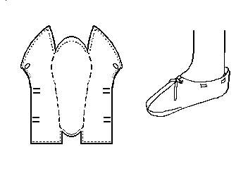

Anglo-Scandinavian Staeppescoh or Slipper
"Type 1"
(10th-11th Centuries)
The typology is based on that used by Carlisle, although any errors in the interpretation here are likely to be mine. This one-piece-shoe from Jorvik generally resembles to the Lembecksburg Fohr Slipper.
This is a turnshoe. There is no upper binding stitch, except perhaps at the instep.
Sewing is most generally done with a 1 mm, or so, "thread" of leather lacing.
This design is based on a description found in Carlisle.
Return to
[Index] or
[Next]
Footwear of the Middle Ages - Historical Shoe Designs/Number 3, by I. Marc Carlson. Copyright 1996
This page is given for the free exchange of information, provided the Author's Name is included in all future revisions, and no money change hands, other than as expressed in the Copyright Page.